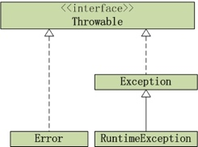

Java提供了两种错误的异常，分别为Exception和Error，它们继承自共同的父类Throwable。
Error
Error表示程序在运行期间出现了非常严重的错误，且这个错误是不可恢复的。将导致程序终止执行。如OutOfMemoryError、ThreadDeath。错误发生时，JVM一般会终止程序的运行。
Exception
Exception表示可恢复的异常，编译可以捕获。
1.检查异常（checked exception）
编译阶段发生，编译器强制在程序里捕获这类异常，放入try代码块中，把对异常的处理代码放到catch块中。常见的有IOException和SQLException。一般在以下情况中使用：
1）异常的发生并不导致程序出错，进行处理后可以继续执行后续的操作。
2）程序依赖于不可靠的外部条件，如IO。
2.运行时异常（runtime exception）
编译器不强制进行捕获。若不捕获的话，由JVM来处理。常见的运行时异常包括NullPointerException、ClassCastException、ArrayIndexOutOfBoundsException、StoreException、BufferOverflowException、ArithmeticException。
出现运行时异常之后，系统会将异常一直往上次抛出，知道遇到处理代码位置。若没有处理代码，则抛到最上层。多线程run()方法抛出，线程终止，或单线程main()方法抛出，整个程序退出。